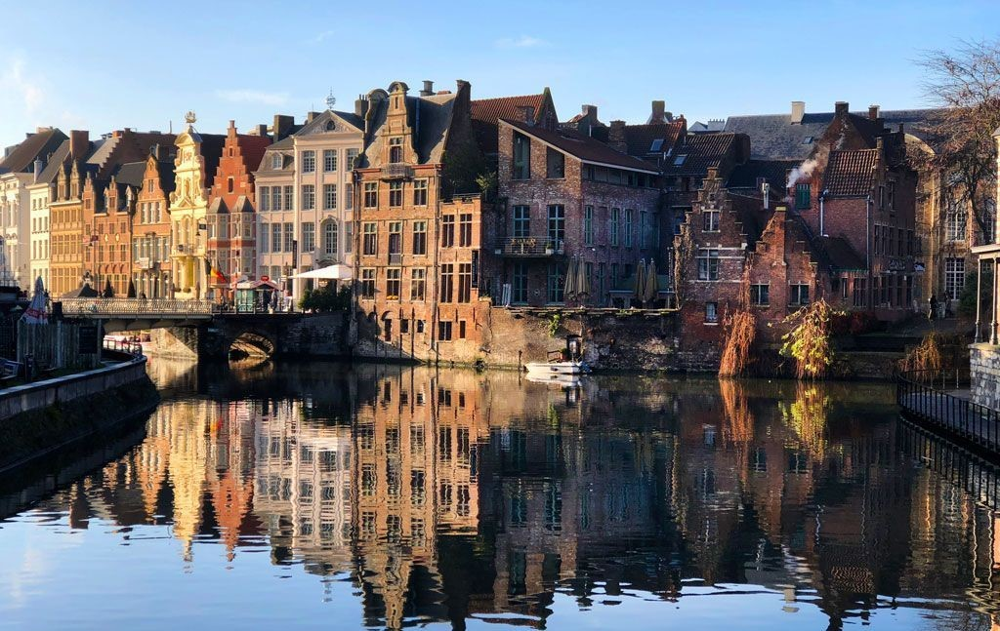
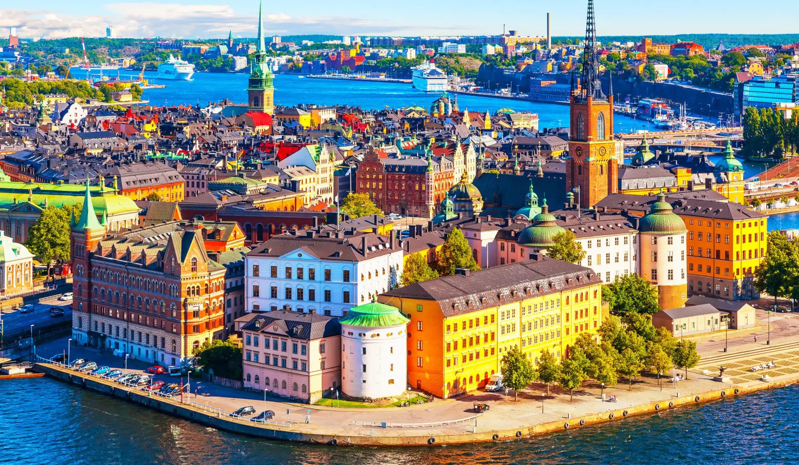
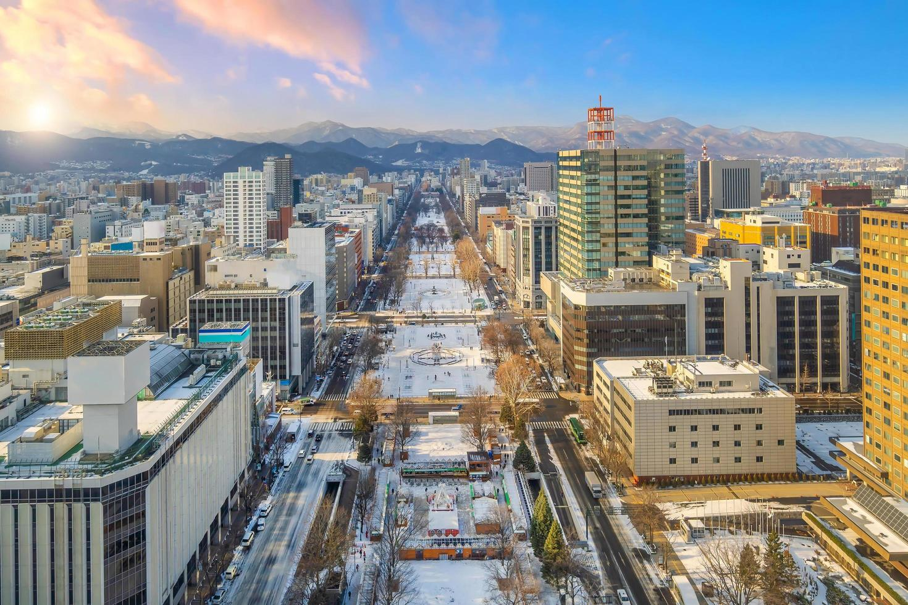

Bienvenido CIUDADES, me llamo Marco y en esta página web se aplicará en ella la base recibida anteriormente en los ejercicios anteriores.
Brujas, ubicada en Bélgica, es conocida por sus canales pintorescos, su arquitectura medieval y su rica
historia. A menudo llamada "La Venecia del Norte," la ciudad es un destino popular para turistas que
buscan disfrutar de su ambiente romántico y sus encantadoras calles empedradas.
La ciudad cuenta con más de 80 puentes que conectan sus islas, lo que la convierte en un
lugar ideal para paseos en barco y exploración a pie. Además es famosa por su cerveza artesanal. La
ciudad alberga varias cervecerías que producen variedades únicas, y la tradición cervecera belga ha sido
reconocida como Patrimonio Cultural Inmaterial de la Humanidad por la UNESCO.


Estocolmo, la capital de Suecia, se extiende sobre 14 islas unidas por más de 50 puentes, lo que le da
un paisaje único y pintoresco. La ciudad es famosa por su mezcla de historia y modernidad, con un casco
antiguo bien conservado (Gamla Stan) y un vibrante ambiente urbano.
Estocolmo alberga el Museo Vasa, donde se encuentra un barco de guerra del siglo XVII que se hundió en
su viaje inaugural y fue recuperado en 1961. Es el barco mejor conservado de su época. Y cada diciembre,
Estocolmo acoge la ceremonia de entrega del Premio Nobel, un evento prestigioso que celebra los logros
en diversas disciplinas, excepto la Paz, que se otorga en Oslo.
Sapporo, la capital de la prefectura de Hokkaido en Japón, es conocida por su clima frío, su famosa
cerveza y su festival de nieve. Fundada en el siglo XIX, la ciudad combina influencias modernas con
hermosos paisajes naturales, siendo un punto de partida ideal para explorar la región montañosa de
Hokkaido.
Celebrado anualmente en febrero, el Festival de Nieve de Sapporo presenta impresionantes esculturas de
nieve y hielo,
atrayendo a millones de visitantes cada año. Y la ciudad es famosa por su cerveza, que es una de las más
antiguas de Japón. La cervecería Sapporo, fundada en 1876, es un símbolo local y ha ganado
reconocimiento internacional.
